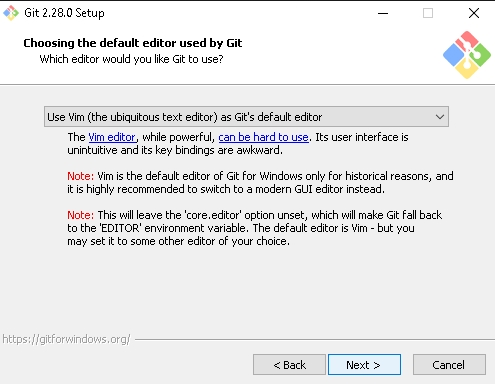
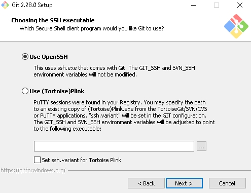
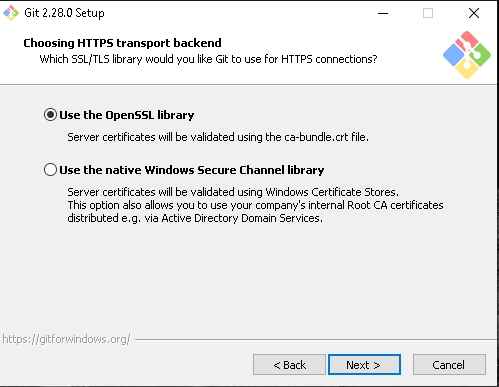
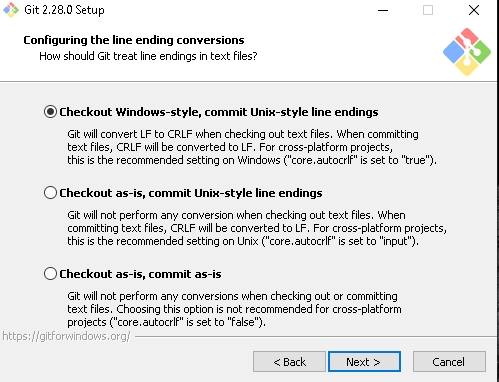
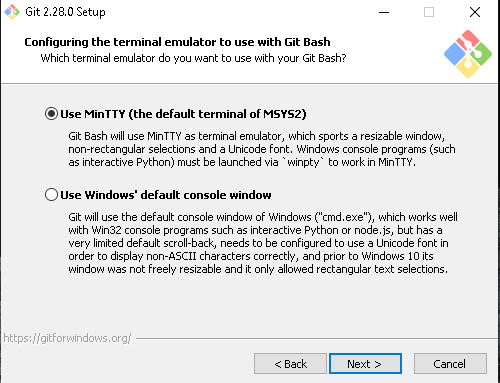
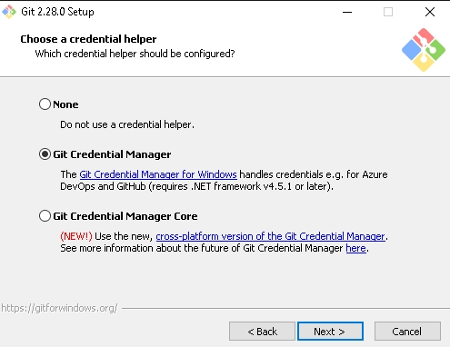
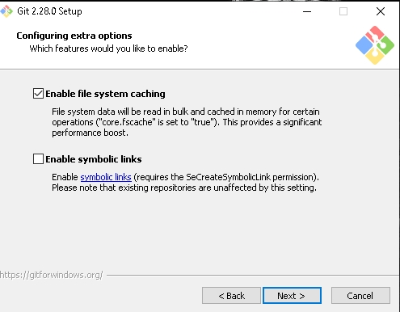
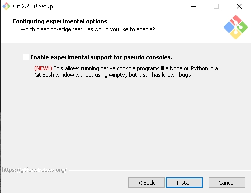
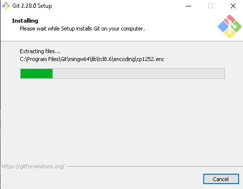
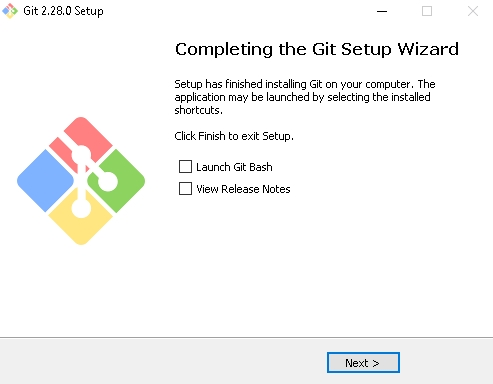

Antes que nada para poder utilizar los beneficios GitHub se debe tener creada una cuenta la cual la crearemos en el sitio oficialEnlace de login, ademas tener instalado GIT para Windows.
Una vez creada la cuenta seleccionamos la opcion de crear repositorio que nos dirigira hacia esta ventana:

En esta parte elegimos un nombre para el repositorio y como forma opcional podemos agregar una descripción para dicho repositorio, luego dejamos por defecto "public" lo cual significa que nuestro repositorio será visto por todos (la opción "private" es solo para personas que han pagado una suscripción y no todos podrán verlo) por ultimo damos click en "create repository".
Nos quedará creado el repositorio asi como muestra la imagen

2. Ahora nos dirigimos a la consola de GIT para ello en el buscador de Windows escribimos git y selecionamos el programa.

3. En esta consola digitaremos los comandos necesarios para subir los archivos deseados al repositorio. Como primer comando digitaremos "cd" y la ubicación de la carpeta que contiene los archivos y luego digitamos "dir" para verificar que esten todos los archivos deseados

4. Acontinuación seleccionamos el editor de texto por defecto para Git y luego por defecto dejamos la opción marcada "use OpenSSH"


7. Dejamos la opción marcada por defecto la cual es OpenSSL como capa de transporte, salvo que se se trate de una red corporativa con dominio y certificados propios.

8. En el siguiente paso se debe configurar el modo de checkout/commit. Por defecto se hace el checkout estilo Windows (se convierte LF a CRLF cuando se hace checkout de archivos de texto y viseversa al momento de commit) Git implementa esta conversión para poder visualizar correctamente los saltos de línea en Windows. Se puede optar por otra convención según se requiera.

9. Seleccionamos Mintty el cual nos permitirávpoder utilizar Git Bash.

10. Luego seleccionamos la "GIT credential manager" que es la que nos aparece por defecto.

11. Acontinuación vienen unas opciones adicionales experimentales que si deseamos podemos habilitar, sino damos click en siguiente.


12. Esperamos a que finalice la instalación y despues seleccionamos siguiente lo cual significa que hemos finalizado la instalación.

